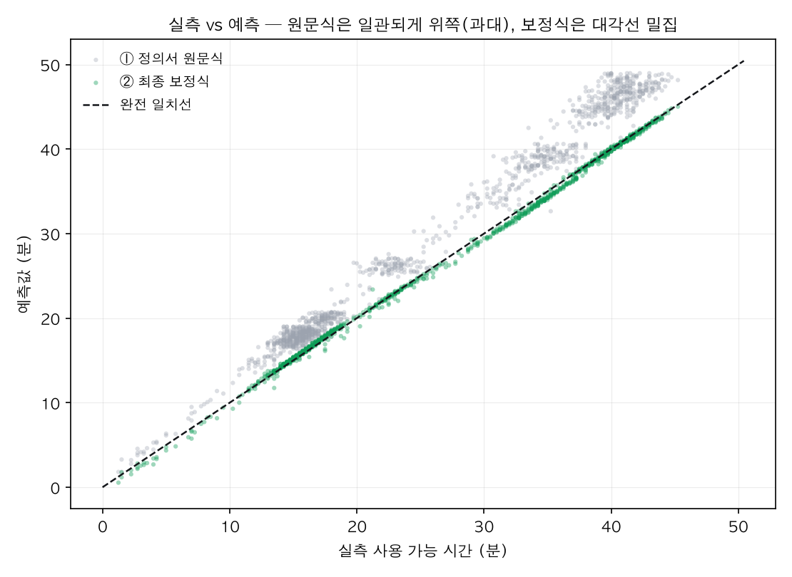
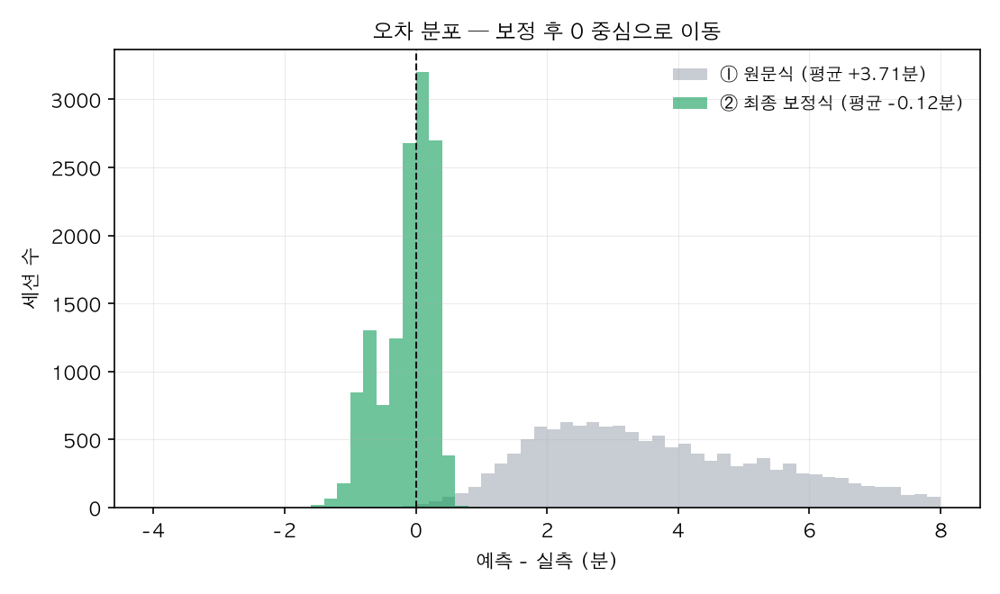
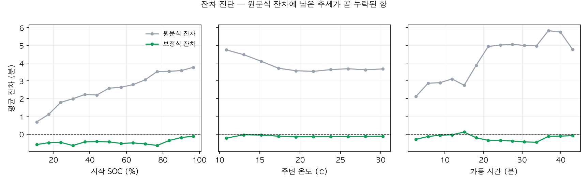
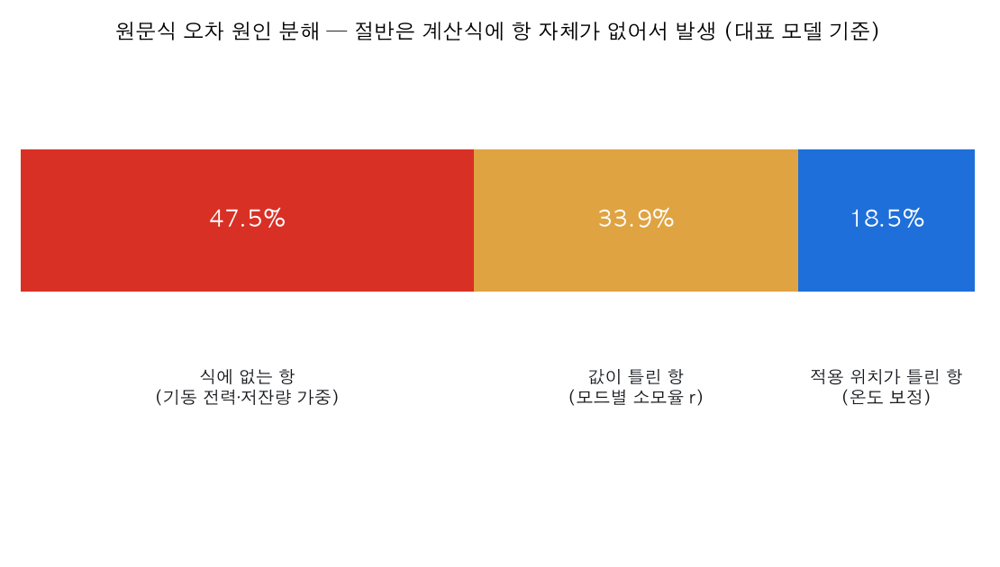

01실시간 예측 — 3차 보정식
3차 시뮬레이션 결과보고에서 지적된 세 항(기동 전력 · 저잔량 가중 · 온도 보정 위치)을 반영한 보정식으로 계산합니다. 사용자 모델을 바꾸면 파라미터(pᵢ · k · μ_T)가 자동 로드되고, 정의서 원문식과의 차이도 함께 표시됩니다.
사용자 모델 (정의서 3장)
입력 조건
현재 잔량 SOC100%
배터리 건강도 SOH100%
신품 = 100%. 등가 사이클 누적에 따라 하락합니다.
주변 온도22°C · f_temp 1.00
10℃ 미만 0.85 / 10~35℃ 1.00 / 35℃ 초과 0.90
흡입 부하 조건 (L축)k = 1.00
보정치를 합산하며 상한은 1.40입니다 (현재 옵션 조합 최대 1.33).
필요 청소 시간 T_req8분
기본값은 모델별 평균 세션 시간 μ_T입니다.
모드 구성 pᵢ
모델 기본값 외에 대안 구성을 즉시 비교할 수 있습니다.
예상 사용 가능 시간 T_avail
36.5분
여유 시간 margin
실효 소모율 r_eff
종료 예상 잔량
계산 과정
02기기 화면 — 페르소나 5종
UX 제안서의 디자인 시스템(호칭 · 말투 · 컬러 무드 · SOC 임계값)을 그대로 구현했습니다. 화면 판정은 제안서의 SOC 고정 임계값을 따르고, 그 아래에 계산식 margin 판정을 나란히 표시해 두 기준이 어긋나는 지점을 드러냅니다.
현재 잔량 SOC — 활성 화면이 바뀝니다100%
서브타입 (제어 모델)
문구·화면은 같고 배터리 제어와 수명 코칭만 달라집니다.
호칭준우
A는 준우 · B는 지영이 기본값입니다. C·D·E는 호칭을 쓰지 않습니다.
구조 정리 — 페르소나는 문구 톤과 화면 스킨의 단위, 서브타입(A-1·A-2 등)은 충전 습관이 달라 수명 코칭이 갈라지는 단위입니다.
제안서의 F(일반가정)는 제어 모델 체계(E-1·E-2)에 맞춰 E로 표기했습니다.
호칭 뒤 조사는 받침에 따라 자동으로 갈립니다(준우야 · 지영아).
페르소나별 문구 · 임계값
현재 선택된 모델의 행이 강조됩니다. 문구는 제안서 원문 그대로이며, 아이돌 보이스 대사는 각 화면 하단에 함께 표시됩니다.
02-BSOC 고정 임계값 검증
제안서는 판정을 SOC 퍼센트로 나눕니다. 그런데 같은 70%라도 소모율이 다르면 완주 가능 여부가 달라집니다. 각 임계값에서 실제 margin이 얼마인지 보정식으로 역산해, 고정 임계값이 안전한지 모델별로 확인했습니다.
완주 가능 임계값에서의 실제 여유 시간
0선 아래는 "완주 가능"이라고 안내했는데 실제로는 완주 못 하는 구간입니다.
계산식이 제안하는 임계값
margin +5분 / 0분을 만족하는 SOC를 역산한 값입니다.
03계산식 검증 — 원문식 · 보정식 · 회귀
팀 3차 시뮬레이션 로그 14,014세션(10개 모델 · 60가구 · 1년) 중 가동 1분 미만을 제외한 13,392건에 동일한 보정식을 적용해 검증했습니다. 수치는 시뮬레이션 결과보고(3차) 기준이며, 회귀 feature는 멘토 제시 5개를 그대로 썼습니다.
예측값 vs 실측값 (검증 데이터)
원문식(회색)은 대각선 위쪽에 몰려 있습니다 — 실제보다 오래 쓸 수 있다고 안내한다는 뜻입니다.
사용자 모델별 예측 편향 (분)
10개 모델 전부 원문식이 양의 편향입니다. 특정 모델이 아니라 계산식 자체의 문제입니다.
적합된 보정 계수
학습된 회귀식
모델별 상세
시뮬레이션 진단 그래프 — 3차 결과보고 분석 원본




04시뮬레이션 데이터셋 · 모델 파라미터
팀 3차 시뮬레이션 산출물(전체모델_세션로그.csv)입니다. 10개 사용자 모델 × 가구 6곳 × 1년치 사용 이력이며, 방전 과정을 1분 이하 단위로 재현해 기동 전력·저잔량 전압강하·온도 영향이 로그에 들어 있습니다.
모델별 설계값 vs 실측값
설계 r_eff가 실측보다 일관되게 낮습니다 — 정의서 6장 "잠정치를 실측으로 대체" 항목의 근거입니다.
세션 로그 샘플 — 전체모델_세션로그.csv 14,014건 → 분석 13,332건 · 모델별 6건 표본
05확인이 필요한 항목